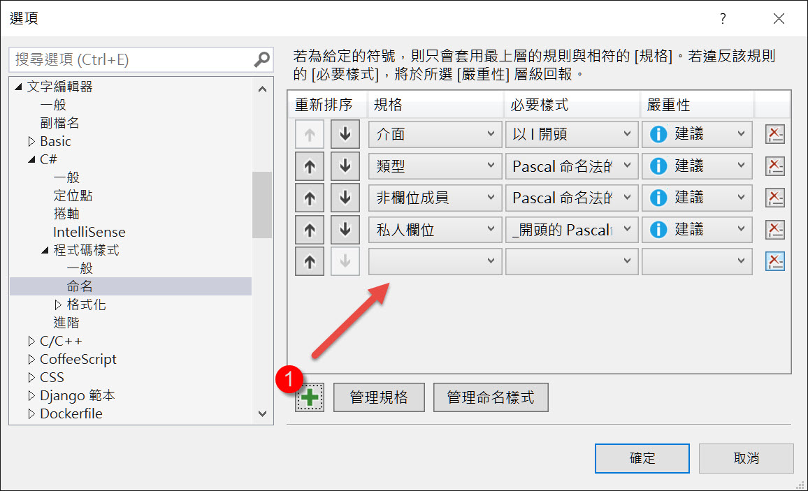
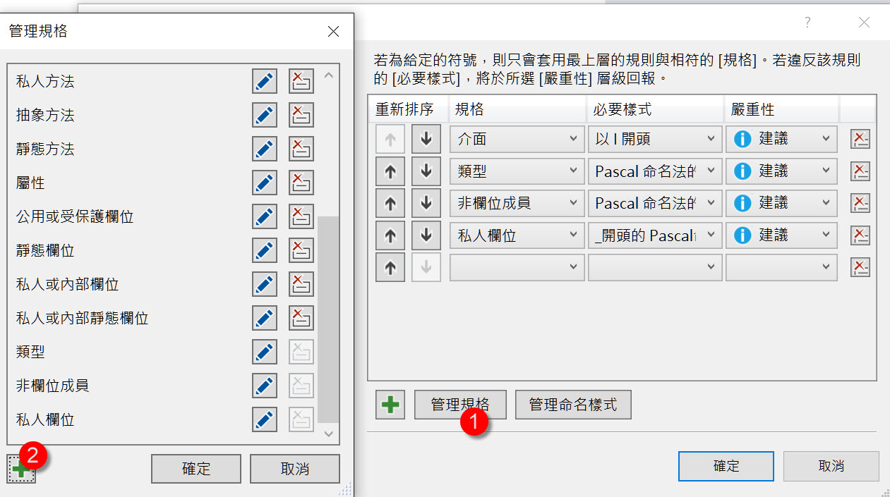
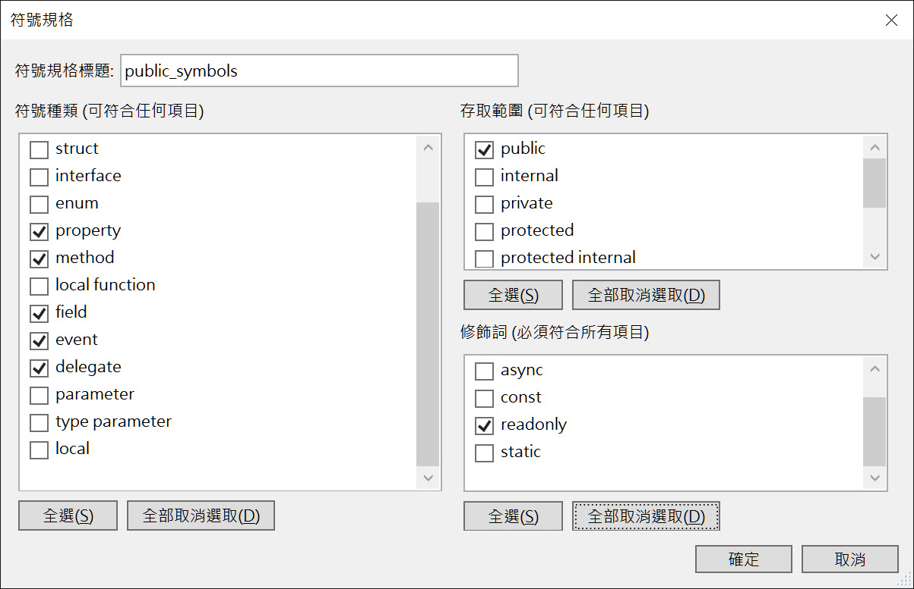
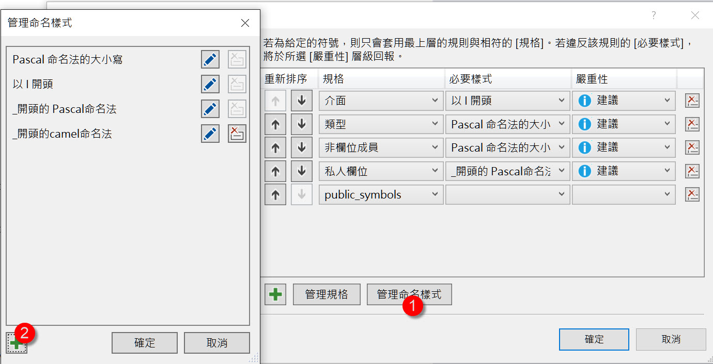
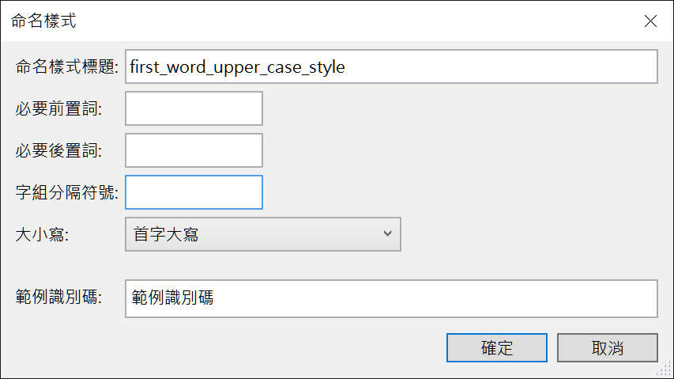
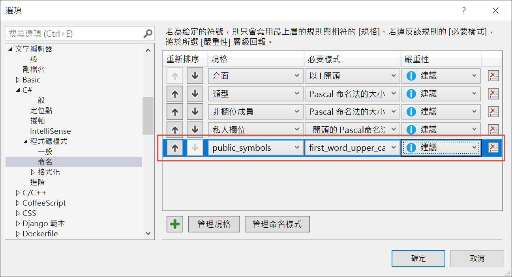

在 Visual Studio 2017 以後的版本，可以使用 EditorConfig 來設定每個專案的編輯器要遵循個規則。
會用到這功能，通常是團隊有很多不同的專案，或是接外包，code style 在不同專案有不同樣式，
所以不能任性的只在 Visual Studio 設定，必須根據每個專案不同來設定。
基本概念可以參考使用 EditorConfig 建立可攜式自訂編輯器設定
這邊想說明的是關於命名慣例的設定
dotnet_naming_rule
表示一個命名規則，最上層的設定
有下列三種設定
symbols
1
dotnet_naming_rule.<namingRuleTitle>.symbols = <symbolTitle>
設定套用此規則的目標
- namingRuleTitle: 為此規則隨意訂個名字
- symbolTitle: 此目標的名稱
style
1
dotnet_naming_rule.<namingRuleTitle>.style = <styleTitle>
設定此規則的命名樣式
- namingRuleTitle: 為此規則隨意訂個名字
- styleTitle: 此樣式的名稱
severity
1
dotnet_naming_rule.<namingRuleTitle>.severity = <value>
設定此規則的嚴重程度
- namingRuleTitle: 為此規則隨意訂個名字
- value: 嚴重程度的值，可以是 none、suggestion、warning、error
dotnet_naming_symbols
描述怎樣的目標需要套用此命名樣式
有下列三種設定
applicable_kinds
1
dotnet_naming_symbols.<symbolTitle>.applicable_kinds = <values>
設定符號類型
- symbolTitle: 此目標的名稱
- values: 此規格的類型，可以是*、namespace、class、struct、interface、enum、property、method、field、event、delegate、parameter、type_parameter、local、local_function
applicable_accessibilities
1
dotnet_naming_symbols.<symbolTitle>.applicable_accessibilities = <values>
設定存取層級
- symbolTitle: 此目標的名稱
- values: 存取層級，可以是*、public、internal 或 friend、private、protected、protected_internal 或 protected_friend、local
required_modifiers
1
dotnet_naming_symbols.<symbolTitle>.required_modifiers = <values>
設定修飾詞
- symbolTitle: 此目標的名稱
- values: 修飾詞，可以是abstract 或 must_inherit、async、const、readonly、static 或 shared
dotnet_naming_style
描述命名規則
有下列四種設定
required_prefix
1
dotnet_naming_style.<styleTitle>.required_prefix = <prefix>
需要前置詞
- styleTitle: 樣式的名稱
- prefix: 前置詞
required_suffix
1
dotnet_naming_style.<styleTitle>.required_suffix = <suffix>
需要後置詞
- styleTitle: 樣式的名稱
- suffix: 後置詞
word_separator
1
dotnet_naming_style.<styleTitle>.word_separator = <separator character>
需要特定的文字分隔符號
- styleTitle: 樣式的名稱
- separator character: 分隔符號
capitalization
1
dotnet_naming_style.<styleTitle>.capitalization = <value>
需要大寫樣式
- styleTitle: 樣式的名稱
- value: 可以的是pascal_case、camel_case、first_word_upper、all_upper、all_lower
範例
接著看範例
1 | [*.{cs,vb}] |
第一行是讓此設定針對.cs和.vb的檔案有效
第二行設定此規則針對目標的名稱或說是代號，
public_members_must_be_capitalized 是此規則的名稱
public_symbols 是對應目標的名稱代號，之後設定 symbols 必須代上。
第三到五行針對public_symbols設定目標。
第七行設定樣式的名稱代號
第八行針對first_word_upper_case_style設定樣式，
第10行設定嚴重程度
工具設定
這樣看有點混亂的話，我們來用原本 Visual Studio 的設定視窗做出上面範例的命名規則，
新增一個命名規則，設定視窗無法讓我們取名字，但我們就叫他是 public_members_must_be_capitalized 吧

新增一個符號規格

將設定如下

這裡可以看出 public_symbols 的設定。
完成之後換設定命名樣式

將設定如下

這裡可以看出 first_word_upper_case_style 的設定
最後在外層設定嚴重程度就完成了

如此參考下來，應該對 editorconfig 的命名規則有完整的了解了。